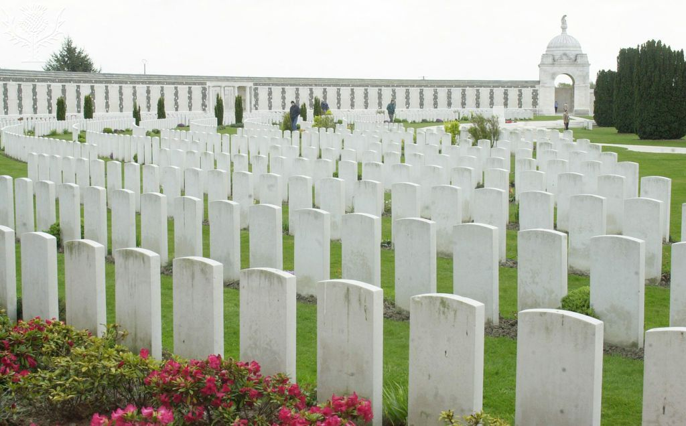

Celebrate or Commemorate?
While the Battle of Passchendaele did end in victory for the Canadians and the Allied forces as a whole, the Battle of Passchendaele really is something to be commemorated.
The Battle of Passchendaele was a direct result of poor risk assessment, poor holistic strategy, and especially excessive pride. It began when General Douglas Haig, the battle’s main planner and lead proponent, proposed another attack on German-held Ypres (Passchendaele) in hopes that its capture would grant passage to occupied ports on the English Channel, where many German U-boat bases operated.
When Haig proposed his plans, the Prime Minister of Britain, David Lloyd George, was “skeptical.” It involved a large loss of life and the no guarantee of passage to the U-boat bases after capture, which was, of course, the entire point of the assault. Nonetheless, the plan was approved. The assault was underway in mid-July, as artillery bombarded the occupied land. Unfortunately, very heavy rain also came and lasted many weeks. Soon enough, the battlefield at Ypres was a muddy, holey, swampy nightmare. British troops attacked on 31 July 1917, but proved unsuccessful in the horrendous conditions, making little progress while both sides attacked as viciously as they could.
When the British troops were exhausted, Haig had the Canadians brought in. The commander of the Canadian Forces, Arthur Currie, objected to the plan when it was presented to him, saying that it would incur a high casualty rate for little gain. Unfortunately, Haig did not listen, so Currie’s hands were mostly tied, and he had to go through with it anyway. Currie prepared his army as best he could in preparation for the battle.
On 26 October, the Canadians began to attack. On 6 November, they finally captured the territory of Passchendaele village, and on the 10th, they took the remaining areas of high ground in Ypres, officially ending the Battle of Passchendaele. While this outcome was technically a success, it wouldn’t be looked at as one for long.
In the mud and bad weather, disease was rampant. Casualty rates were high, with 15,600 for the Canadians and 275,000 for all the armies under British command (the British, Canadians, Australians and New Zealanders). The land they secured would be vacated a few weeks later in anticipation of an incoming enemy attack. The entire ordeal turned out futile; fruitless. And it’s mostly thanks to poor risk assessment, poor holistic strategy, and the excessive pride of General Douglas Haig, the questionable battle’s strong main proponent.